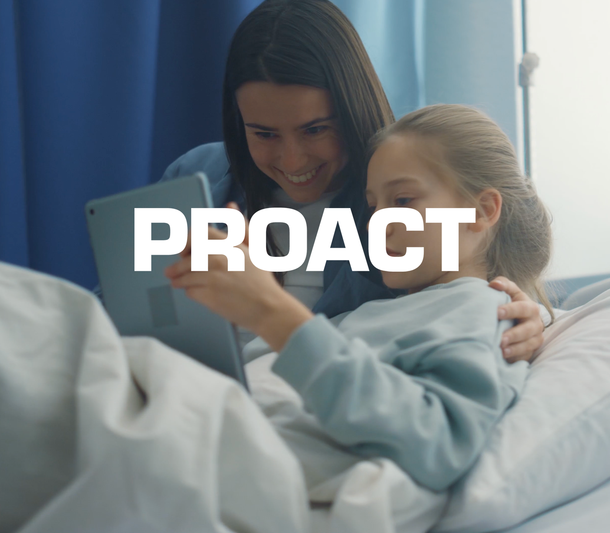

"Our last 12 months- Proact
have been our best
for brand awareness."

A multi-year content partnership with Proact - Europe's leading independent data centre and cloud services provider - built around customer-led video, podcasting and social.
Proact has been at the forefront of data centre and cloud services since 1994, building solutions that free their customers up to innovate rather than just keep the lights on. A brilliant business with a brilliant offer - and the kind of complex technical story that is hard to make people care about from a cold start.
When we started working together in 2013, the challenge was simple: Proact had a really good story to tell, but they needed to build trust before audiences would engage with it. Sales decks, white papers and PDFs were doing the heavy lifting - and they weren't enough.
We were brought in to translate Proact's value into human-led content: real customers, real conversations, and an editorial voice that could carry across video, podcast and social - and keep working for them, quarter after quarter.
"The impact that Fortay Media have had on our social media in such a short space of time has just been outstanding. The views on our video content have gone through the roof. Our followers are increasing."
- Ben Walker · Group Marketing Manager, ProactA content partnership built in layers - starting with customer-led video, growing into a flagship podcast, and feeding an ongoing social engine. Each piece reinforces the next.
We planned and produced visual testimonials of real Proact customers - replacing PDF write-ups with proper on-camera conversations. Audiences could finally see the customer and hear the story in their own words.
We took a closer look at Proact's offer across the business and structured it into five clear pillars - making it easier to target the right customers, understand their pain points, and produce content that lands for each segment.
From the positioning work we developed Proact's podcast series, Let's Talk Data - designed to showcase the brand's personality and the expertise of its people, episode after episode. We stood it up quickly and built it to scale.
Commissioned to grow the audience for the podcast - and the brand around it - we optimised Proact's LinkedIn presence and ran an ongoing social media programme that turned every shoot day into weeks of channel content.
"Our last 12 months- Proact
have been our best
for brand awareness."
Most agency relationships are measured in months. Ours with Proact is measured in years - because every piece of work compounds on the one before it.
"Fortay Media were the obvious choice to work with on this podcast series - they know Proact, they know our value, and they know what we are trying to achieve. They were absolutely fantastic in being able to get this podcast up and running quickly."
- ProactTell us about the brand, the audience, and what success looks like. We'll come back with a clear approach, timeline and quote - usually within 48 hours.